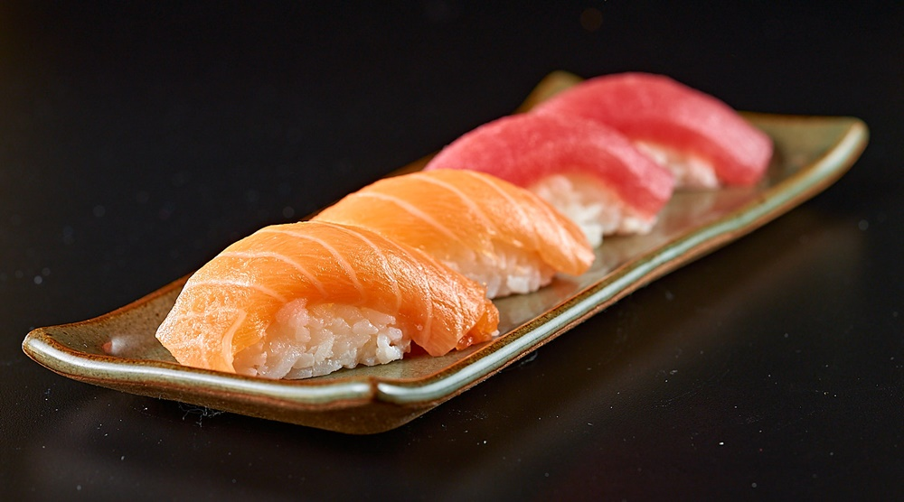

Bem-vindo ao Restaurante Japonês Sabor do Oriente, onde você pode desfrutar da autência culinária japonesa.

O sushi é um prato japonês milenar, originado no sudeste asiático como uma técnica de conservação de peixe no arroz fermentado. Popularizou-se mundialmente como uma combinação de arroz temperado com vinagre, frutos do mar (peixe cru, camarão) e alga nori, destacando-se por ser saudável e versátil.
Começou com o narezushi (peixe fermentado com arroz, onde o arroz era descartado) por volta do século IV a.C..
No século XV, o tempo de fermentação diminuiu e o arroz passou a ser consumido. Em Edo (Tóquio), adicionou-se vinagre ao arroz (shari) para um preparo mais rápido.
Tornou-se comida de rua popular no século XX e se expandiu pelo mundo com inovações como o california roll.
| Dias da Semana | Horários |
|---|